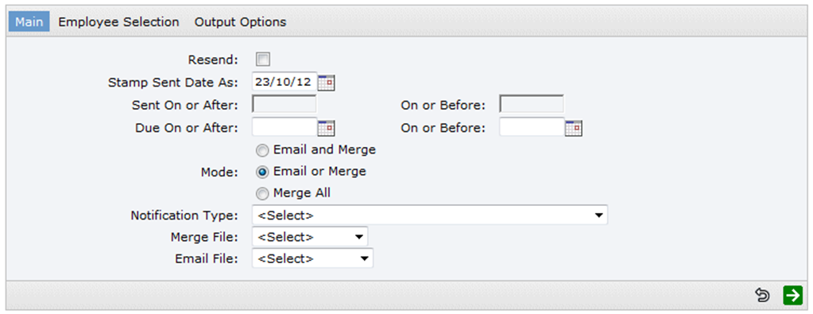
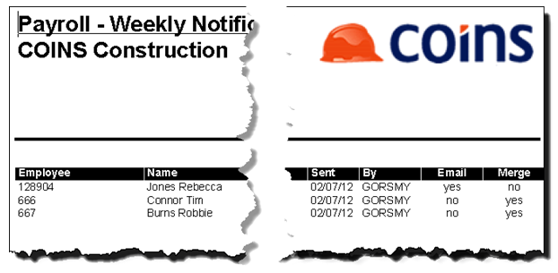
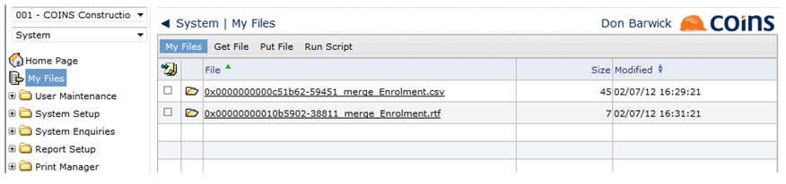

The Notifications Report allows you to send email notifications and produce mail merge documents for auto-
There are different versions of the report, one for each pay frequency. The report could be scheduled or run manually. Employee selection is available, and employee security is applied. You can use My Files to access the documents it creates.
Alternatively, you can use the mail merge feature on the Notifications browse to send emails and produce mail merge documents.
Notification Report Selection Screen
The report content gives details of who was included and the method of notification employed.
Notification Report
The merge document (if any has been produced) can be accessed via My Files. The generated file name includes the name of the merge file.
Output Files in My Files Browse
